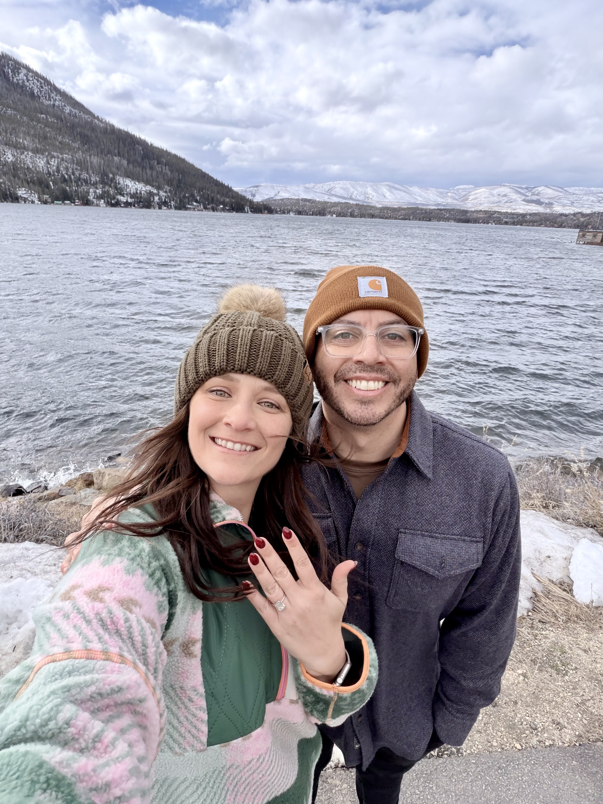

People sometimes raise an eyebrow when they hear that someone with a career in sports revenue and partnerships is moving into real estate. After spending time on both sides, I'd argue it's one of the most natural transitions in business.
The overlap isn't obvious until you look at the structure of the work. In sports, the core of premium revenue is building long-term relationships with high-net-worth individuals and corporate decision-makers, understanding what they value, and helping them make large financial commitments to things they believe in. In real estate, the core of the work is exactly the same. The asset class is different. The underlying human dynamics are nearly identical.
The Relationship Architecture Translates Directly
The most durable skill I developed across LAFC, SoFi Stadium, and the major league organizations I've worked with is what I'd call relationship architecture — the ability to build trust with someone over time, understand their goals at a level of genuine depth, and position an opportunity in a way that connects to what actually matters to them.
In sports, that might look like understanding that a corporate partner's real goal isn't arena visibility but recruiting talent in a competitive market — and structuring the partnership around that insight. In real estate, it looks like understanding that a buyer isn't just looking for square footage but for a specific kind of life, a certain proximity to family, a home that fits where they see themselves in ten years. The process of getting to that level of understanding is the same skill.
Complex Deal Structure Is Complex Deal Structure
One of the things that surprised me when I moved toward real estate was how many professionals underestimate the structural complexity of both sides. People think of home sales as transactional, but commercial real estate, investment properties, and high-value residential transactions involve negotiation, multi-party coordination, legal review, financing structures, and long timelines. That's the same complexity profile as a multi-year stadium suite agreement or a naming rights deal.
The muscle memory from structuring complex deals in sports — knowing how to keep multiple stakeholders aligned, how to manage a process that can take months, how to address the concerns that surface late in diligence without losing the deal — is exactly the muscle that gets tested in real estate at the top end of the market. It transfers with very little translation required.
Building a Diversified, Relationship-Driven Platform
Beyond the direct skill overlap, the reason I'm excited about the combination of sports business experience, real estate, and insurance is what they make possible together. Each discipline deepens the relationship network and broadens what I can offer to clients who are building their own wealth and business positions. A person I know from the sports world who is buying their first investment property, someone I've served in real estate who needs life or health coverage for a growing business — the network compounds in a way that a single-industry career doesn't allow.
That diversification is deliberate. Michigan has become home base, and building a business here that spans industries feels like the next version of the same work I've always done: building from zero, creating value through relationships, and positioning for long-term growth rather than short-term transactions. Those interested in Michael's approach to business development can connect on his Linktree page.
Conclusion
The career transitions that look unusual from the outside often make the most sense from the inside, because the person making them can see what the outside can't: the underlying skill set that makes the new thing familiar even when the surface looks different. For me, the move from sports revenue and partnerships into real estate and business development isn't a pivot. It's an expansion — the same work, a broader set of tools, and a longer runway for building what lasts.